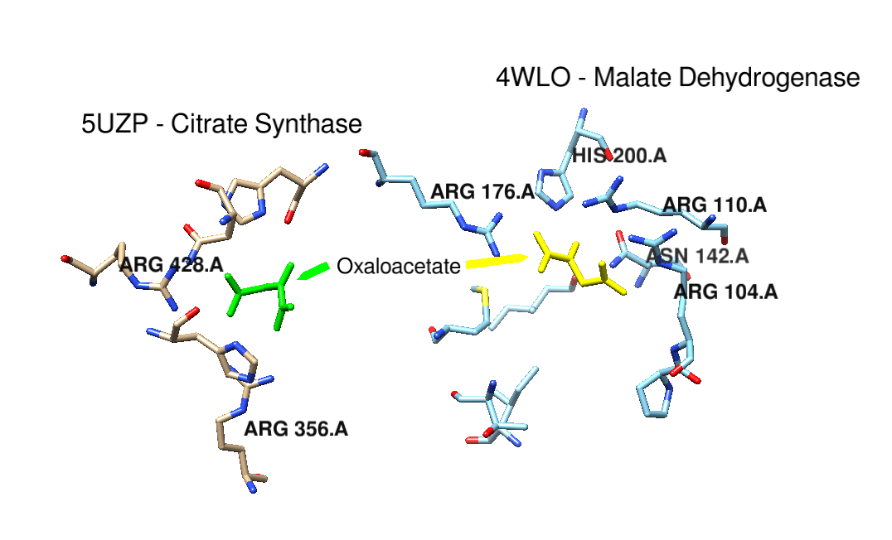
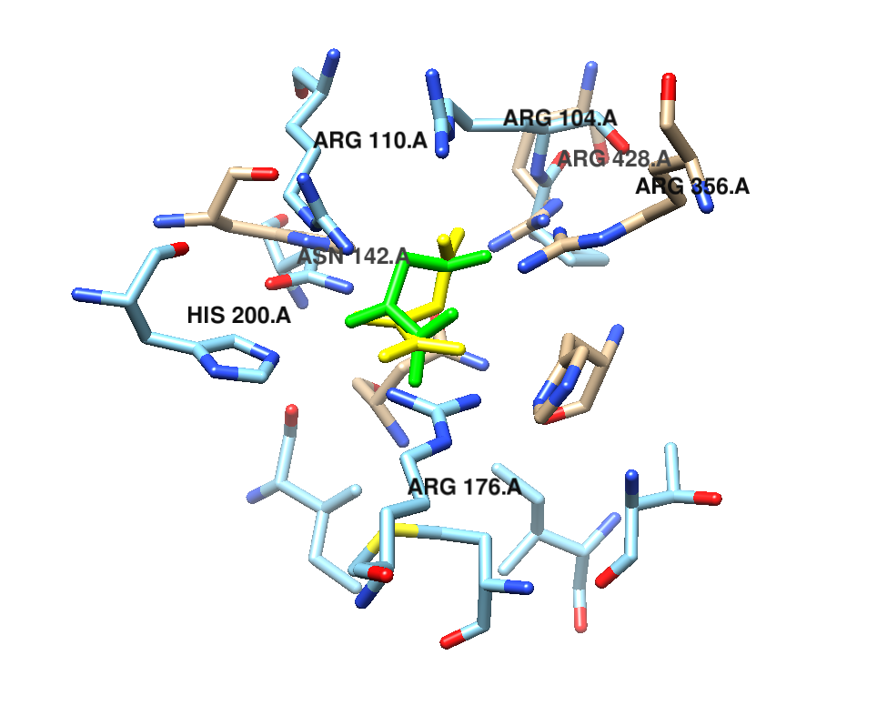

Step Eight: Superpose the Structures
Use the match command in Chimera based on the ligand or critical amino acids
ex) Comparison of ligand OAA bound to 5UZP and 4WLO respectively

Option 1) use the match function based on the ligand residue number
ex) match #1:501 #0:402

Option 2) use match superposition based off of binding amino acids atoms and ligand atoms
ex)match #0:501.A@O1 #0:501.A@O2 #0:428.A@NH2 #0:428.A@NH1 #1:402.A@O4 #1:402.A@O5 #1:176.A@NH2 #1:176.A@NH1